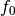
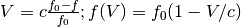
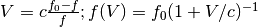
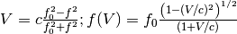
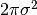

Equivalencies¶
The unit module has machinery for supporting equivalences between
different units in certain contexts. Namely when equations can
uniquely relate a value in one unit to a different unit. A good
example is the equivalence between wavelength, frequency and energy
for specifying a wavelength of radiation. Normally these units are not
convertible, but when understood as representing light, they are
convertible in certain contexts. This will describe how to use the
equivalencies included in astropy.units and then describe how to
define new equivalencies.
Equivalencies are used by passing a list of equivalency pairs to the
equivalencies keyword argument of Quantity.to or Unit.to methods. Alternatively, if a larger
piece of code needs the same equivalencies, one can set them for a
given context.
Built-in equivalencies¶
Parallax Units¶
parallax() is a function that returns an
equivalency list to handle conversions between angles and length.
Length and angles are not normally convertible, so
to() raises an exception:
>>> from astropy import units as u
>>> (8.0 * u.arcsec).to(u.parsec)
Traceback (most recent call last):
...
UnitConversionError: 'arcsec' (angle) and 'pc' (length) are not convertible
However, when passing the result of
parallax() as the third argument to the
to() method, angles can be converted
into units of length (and vice versa).
>>> (8.0 * u.arcsec).to(u.parsec, equivalencies=u.parallax())
<Quantity 0.125 pc>
>>> u.AU.to(u.arcminute, equivalencies=u.parallax())
3437.7467707580054
Angles as Dimensionless Units¶
Angles are treated as a physically distinct type, which usually helps to
avoid mistakes. For units such as rotational energy, however, it is not
very handy. (Indeed, this double-sidedness underlies why radian went from
supplementary to derived unit.)
The function dimensionless_angles()
provides the required equivalency list that helps convert between
angles and dimensionless units. It is somewhat
different from all others in that it allows an arbitrary change in the
number of powers to which radian is raised (i.e., including zero and thus
dimensionless). For instance, normally the following raise exceptions:
>>> from astropy import units as u
>>> u.degree.to('')
Traceback (most recent call last):
...
UnitConversionError: 'deg' (angle) and '' (dimensionless) are not convertible
>>> (u.kg * u.m**2 * (u.cycle / u.s)**2).to(u.J)
Traceback (most recent call last):
...
UnitConversionError: 'cycle2 kg m2 / s2' and 'J' (energy) are not convertible
But when passing we pass the proper conversion function,
dimensionless_angles(), it works.
>>> u.deg.to('', equivalencies=u.dimensionless_angles())
0.017453292519943295
>>> (0.5e38 * u.kg * u.m**2 * (u.cycle / u.s)**2).to(u.J,
... equivalencies=u.dimensionless_angles())
<Quantity 1.9739208802178715e+39 J>
>>> import numpy as np
>>> np.exp((1j*0.125*u.cycle).to('', equivalencies=u.dimensionless_angles()))
<Quantity (0.7071067811865476+0.7071067811865475j)>
The example with complex numbers is also one may well be doing a fair number of similar calculations. For such situations, there is the option to set default equivalencies.
Spectral Units¶
spectral() is a function that returns
an equivalency list to handle conversions between wavelength,
frequency, energy, and wave number.
As mentioned above with parallax units, we simply pass a list of
equivalencies (in this case, the result of
spectral()) as the third argument to the
to() method and wavelength, frequency and
energy can be converted.
>>> ([1000, 2000] * u.nm).to(u.Hz, equivalencies=u.spectral())
<Quantity [ 2.99792458e+14, 1.49896229e+14] Hz>
>>> ([1000, 2000] * u.nm).to(u.eV, equivalencies=u.spectral())
<Quantity [ 1.23984193, 0.61992096] eV>
These equivalencies even work with non-base units:
>>> # Inches to calories
>>> from astropy.units import imperial
>>> imperial.inch.to(imperial.Cal, equivalencies=u.spectral())
1.869180759162485e-27
Spectral (Doppler) equivalencies¶
Spectral equivalencies allow you to convert between wavelength, frequency, energy, and wave number but not to velocity, which is frequently the quantity of interest.
It is fairly straightforward to define the equivalency, but note that there are
different conventions.
In these conventions  is the rest frequency,  is the observed frequency,
is the observed frequency,
 is the velocity, and
is the velocity, and  is the speed of light:
is the speed of light:
- Radio 
- Optical 
- Relativistic 
These three conventions are implemented in
astropy.units.equivalencies as
doppler_optical(),
doppler_radio(), and
doppler_relativistic(). Example use:
>>> restfreq = 115.27120 * u.GHz # rest frequency of 12 CO 1-0 in GHz
>>> freq_to_vel = u.doppler_radio(restfreq)
>>> (116e9 * u.Hz).to(u.km / u.s, equivalencies=freq_to_vel)
<Quantity -1895.4321928669085 km / s>
Spectral Flux Density Units¶
There is also support for spectral flux density units. Their use is
more complex, since it is necessary to also supply the location in the
spectrum for which the conversions will be done, and the units of
those spectral locations. The function that handles these unit
conversions is spectral_density(). This
function takes as its arguments the Quantity for the spectral
location. For example:
>>> (1.5 * u.Jy).to(u.erg / u.cm**2 / u.s / u.Hz,
... equivalencies=u.spectral_density(3500 * u.AA))
<Quantity 1.5e-23 erg / (cm2 Hz s)>
>>> (1.5 * u.Jy).to(u.erg / u.cm**2 / u.s / u.micron,
... equivalencies=u.spectral_density(3500 * u.AA))
<Quantity 3.670928057142856e-08 erg / (cm2 micron s)>
Brightness Temperature / Flux Density Equivalency¶
There is an equivalency for brightness temperature and flux density. This equivalency is often referred to as “Antenna Gain” since, at a given frequency, telescope brightness sensitivity is unrelated to aperture size, but flux density sensitivity is, so this equivalency is only dependent on the aperture size. See Tools of Radio Astronomy for details.
Note
The brightness temperature mentioned here is the Rayleigh-Jeans equivalent temperature, which results in a linear relation between flux and temperature. This is the convention that is most often used in relation to observations, but if you are interested in computing the exact temperature of a planck function that would produce a given flux, you should not use this equivalency.
The brightness_temperature equivalency requires
the beam area and frequency as arguments. Recalling that the area of a 2D
gaussian is  (see wikipedia),
here is an example:
>>> import numpy as np
>>> beam_sigma = 50*u.arcsec
>>> omega_B = 2 * np.pi * beam_sigma**2
>>> freq = 5 * u.GHz
>>> u.Jy.to(u.K, equivalencies=u.brightness_temperature(omega_B, freq))
3.526294...
Note
Despite the Astropy unit on the left being shown as u.Jy, this is
the conversion factor from Jy/beam to K (because u.beam cannot
currently be used as a meaningful unit since it depends on the
observations).
If you have beam full-width half-maxima (FWHM), which are often quoted and are the values stored in the FITS header keywords BMAJ and BMIN, a more appropriate example converts the FWHM to sigma:
>>> import numpy as np
>>> beam_fwhm = 50*u.arcsec
>>> fwhm_to_sigma = 1. / (8 * np.log(2))**0.5
>>> beam_sigma = beam_fwhm * fwhm_to_sigma
>>> omega_B = 2 * np.pi * beam_sigma**2
>>> freq = 5 * u.GHz
>>> u.Jy.to(u.K, equivalencies=u.brightness_temperature(omega_B, freq))
19.553928332631582
Temperature Energy Equivalency¶
This equivalency allows conversion between temperature and its equivalent in energy (i.e., the temperature multiplied by the Boltzmann constant), usually expressed in electronvolts. This is used frequently for observations at high-energy, be it for solar or X-ray astronomy. Example:
>>> import astropy.units as u
>>> t_k = 1e6 * u.K
>>> t_k.to(u.eV, equivalencies=u.temperature_energy())
<Quantity 86.17332384960955 eV>
Writing new equivalencies¶
An equivalence list is just a list of tuples, where each tuple has 4 elements:
(from_unit, to_unit, forward, backward)
from_unit and to_unit are the equivalent units. forward and
backward are functions that convert values between those units.
For example, until 1964 the metric liter was defined as the volume of 1kg of water at 4°C at 760mm mercury pressure. Volumes and masses are not normally directly convertible, but if we hold the constants in the 1964 definition of the liter as true, we could build an equivalency for them:
>>> liters_water = [
... (u.l, u.g, lambda x: 1000.0 * x, lambda x: x / 1000.0)
... ]
>>> u.l.to(u.kg, 1, equivalencies=liters_water)
1.0
Note that the equivalency can be used with any other compatible units:
>>> from astropy.units import imperial
>>> imperial.gallon.to(imperial.pound, 1, equivalencies=liters_water)
8.345404463333525
And it also works in the other direction:
>>> imperial.lb.to(imperial.pint, 1, equivalencies=liters_water)
0.9586114172355459
A slightly more complicated example: Spectral Doppler Equivalencies¶
We show how to define an equivalency using the radio convention for CO 1-0.
This function is already defined in
doppler_radio(),
but this example is illustrative:
>>> from astropy.constants import si
>>> restfreq = 115.27120 # rest frequency of 12 CO 1-0 in GHz
>>> freq_to_vel = [(u.GHz, u.km/u.s,
... lambda x: (restfreq-x) / restfreq * si.c.to('km/s').value,
... lambda x: (1-x/si.c.to('km/s').value) * restfreq )]
>>> u.Hz.to(u.km / u.s, 116e9, equivalencies=freq_to_vel)
-1895.4321928669262
>>> (116e9 * u.Hz).to(u.km / u.s, equivalencies=freq_to_vel)
<Quantity -1895.4321928669262 km / s>
Note that once this is defined for GHz and km/s, it will work for all other
units of frequency and velocity. x is converted from the input frequency
unit (e.g., Hz) to GHz before being passed to lambda x:. Similarly, the
return value is assumed to be in units of km/s, which is why the .value
of c is used instead of the constant.
Displaying available equivalencies¶
The find_equivalent_units() method also
understands equivalencies. For example, without passing equivalencies,
there are three compatible units for Hz in the standard set:
>>> u.Hz.find_equivalent_units()
Primary name | Unit definition | Aliases
[
Bq | 1 / s | becquerel ,
Ci | 2.7027e-11 / s | curie ,
Hz | 1 / s | Hertz, hertz ,
]
However, when passing the spectral equivalency, you can see there are
all kinds of things that Hz can be converted to:
>>> u.Hz.find_equivalent_units(equivalencies=u.spectral())
Primary name | Unit definition | Aliases
[
AU | 1.49598e+11 m | au, astronomical_unit ,
Angstrom | 1e-10 m | AA, angstrom ,
Bq | 1 / s | becquerel ,
Ci | 2.7027e-11 / s | curie ,
Hz | 1 / s | Hertz, hertz ,
J | kg m2 / s2 | Joule, joule ,
Ry | 2.17987e-18 kg m2 / s2 | rydberg ,
cm | 0.01 m | centimeter ,
eV | 1.60218e-19 kg m2 / s2 | electronvolt ,
erg | 1e-07 kg m2 / s2 | ,
k | 100 / m | Kayser, kayser ,
lyr | 9.46073e+15 m | lightyear ,
m | irreducible | meter ,
micron | 1e-06 m | ,
pc | 3.08568e+16 m | parsec ,
solRad | 6.95508e+08 m | R_sun, Rsun ,
]
Using equivalencies in larger pieces of code¶
Sometimes one has an involved calculation where one is regularly switching back between equivalent units. For these cases, one can set equivalencies that will by default be used, in a way similar to which one can enable other units.
For instance, to enable radian to be treated as a dimensionless unit, simply do:
>>> import astropy.units as u
>>> u.set_enabled_equivalencies(u.dimensionless_angles())
<astropy.units.core._UnitContext object at ...>
>>> u.deg.to('')
0.017453292519943295
Here, any list of equivalencies could be used, or one could add, e.g.,
spectral() and
spectral_density() (since these return
lists, they should indeed be combined by adding them together).
The disadvantage of the above approach is that you may forget to turn the default off (done by giving an empty argument). To automate this, a context manager is provided:
>>> import astropy.units as u
>>> with u.set_enabled_equivalencies(u.dimensionless_angles()):
... phase = 0.5 * u.cycle
... c = np.exp(1j*phase)
>>> c
<Quantity (-1+1.2246063538223773e-16j) >